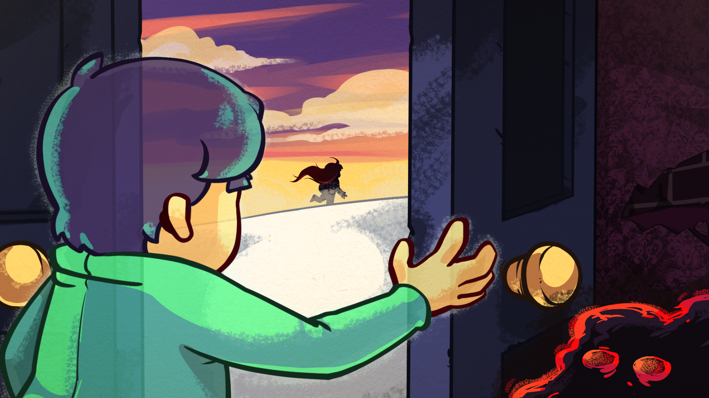
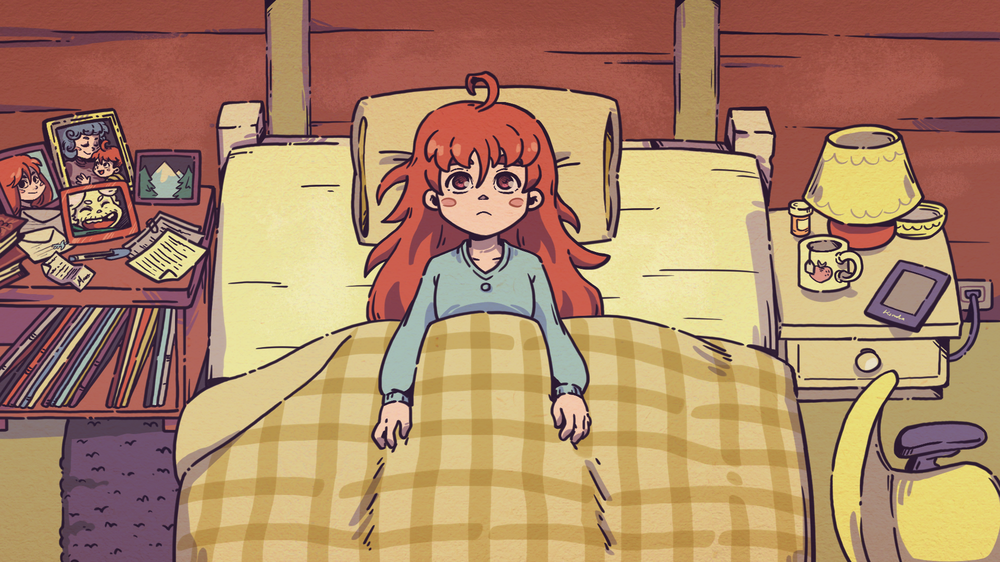

[Insert header here]
Story
I short Celeste is a game about Madeline. A girl with ambition to climb Celeste Mountain.
On her way to the top she gets to know a handful of people, but she most importantly gets to know herself.
Below, we explain the story of Celeste per chapter.
Chapter 1

A-Side
Forsaken City's A-Side serves as an introductory level to much of how the game works. Madeline,
controlled
by the
player, is introduced to combining jumping, dashing, and climbing to make it through various rooms.
Strawberries,
cassette tapes, crystal hearts, dash-refilling crystals, and many other objects are all introduced here.
Momentum is
another core mechanic that is presented.
Three sub-chapters are present: Start, Crossing, and Chasm.
Start
The beginning of "Start" introduces the player to several basic mechanics. The second room introduces
wall
jumping,
which occurs when Madeline jumps from one wall to another; it's the simplest way to climb without using
stamina.
Zippers, also known as "traffic light blocks" first appear in the fourth room. Jumping too soon whilst
the
block is
moving will result in Madeline being thrown into a wall of spikes; this is the player's first
introduction
to momentum.
The next room after features a winged strawberry; dashing will result in it flying away, and as such,
Madeline must jump
on the disappearing platforms right of the berry to collect it. The next room features a light shining
at
the left. It's
the first occurrence of a "berry room", a room outside the main path containing a strawberry.
Springs, which bounce Madeline in the direction the spring is pointing towards, and smashable walls,
which
may be dashed
into to remove, are also introduced here. Six strawberries are hidden within this subchapter.
Crossing
At the beginning of this subchapter, take the path left, and use the dash refill diamond to dash twice
leftwards. This
will lead into a room with a tent, where Theo is hiding. Diamonds refill your dash mid-air.
Later during this subchapter, falling ice blocks make a reappearance. 9 strawberries are hidden in this
subchapter, and
so is the Crystal Heart.
Chasm
The final subchapter contains several slightly more intricate uses of zippers. A Cassette Tape unlocking
the
B-Side can
be found here.
Five strawberries are hidden within this subchapter.
Chapter 2
After leaving the city, Madeline goes to explore some old ruins. Many things have changed since she woke up;
the
campfire is now green, the Celeste Memorial is now rearranging itself, and the sky has gained blue lights.
After exploring the ruins for a bit, the player finds a mirror in which they see a twisted reflection of
themselves.
Attempting to leave the room afterward, the reflection breaks out of the mirror and runs away, activating
the dream
blocks, allowing Madeline to reach more places and explore much of the ruins. Later, after climbing up to a
higher level
of the ruins, she finds the reflection.
Badeline introduces itself as a "part of her" (Madeline). She tells Maddy that it is a relief to finally get
out of her
head, and tells Madeline that they shouldn't climb the mountain. Badeline states that she is the pragmatic
part and that
she is trying to be diplomatic, but as soon as Madeline starts running afterward, Badeline starts chasing
her, forcing
her to move continuously.
After a ten-room-long chase, Madeline finally escapes the ruins. Upon leaving the spire, Badeline stops,
laughing at
her, and then disappears. Not far away Madeline finds a station and a payphone, which starts ringing. Upon
answering, a
green-haired person, internally known as Madeline's ex, on the other side answers the call with a
smartphone; they think
Madeline called them from a payphone, but Madeline claims the opposite, that they are calling her. She
explains that
someone (Badeline) is chasing her and she doesn't understand what's going on. The green-haired person says
that Madeline
is making it up. Madeline describes what happened in more detail, soon realizing it's all a dream. She then
hangs up and
gets angry, Badeline appears and tells her to stop climbing the mountain, and upon her disappearing, the
payphone turns
into a monster that eats Madeline whole.
Madeline then wakes up next to the campfire. Theo can be seen; Madeline may talk to her about her previous
nightmare. He
shows her pictures he took in the ruins, and then they take a selfie (against Madeline's wishes because she
isn't
photogenic). He describes how his grandpa was semi-famous in the photography world and that's why he tried
photography.
Once Madeline arrives at the payphone, she calls her mother and tells her she is a bit overwhelmed by
everything that
has occurred so far.
“Oh! We need to formally commemorate this occasion... Take a selfie with me!”
~ Theo
If Madeline has never seen Theo before, or has seen Theo but never talked to him, special dialogue
references how it's
their first encounter; apart from that, no narrative differences occur.

Chapter 3

After leaving the ruins, Madeline arrives at a hotel. There, she finds a bell with a note saying "Please
Ring for
Service", and she rings it. The lights go down and a ghost appears, introducing himself as the concierge
of
the
"world-renowned Celestial Resort Hotel": Mr. Oshiro. He asks Madeline for the length of her stay, to
which
she replies
that she wants to leave and continue climbing the mountain. This makes Oshiro a bit concerned about
losing a
guest, so
he tells Madeline that there is a world-class view of the peak in their presidential suite and offers to
guide her to
the room.
After traversing a few rooms, Madeline tells him that the hotel is in pretty rough shape. Soon after,
Madeline finds
herself in a messy room full of clothes, books, and crates. Oshiro starts getting worried, realizing the
hotel is a huge
mess. After realizing he can't clean the whole resort alone, he gives up, but Madeline helps him. When
Madeline starts
cleaning, Oshiro thinks it's the power of positive thinking; however, Madeline tells him that it was her
who
cleaned
some of the clutter. Eventually, Madeline can find a paper hidden under a pile of clothes, informing the
hotel staff
that the Celestial Resort is closing; this explains part of why the hotel is in such shape. She can also
find Theo
crawling through the vents to escape the hotel, telling her to stop helping Oshiro; this fails to work,
and
Madeline
continues cleaning. If Madeline has never seen or never talked to Theo before, she will introduce
herself
first; if she
has ignored him despite having seen him in either Forsaken City or Old Site, she will additionally
apologize
for being
antisocial.
After cleaning up all the mess, Oshiro guides her to the presidential suite, where, en route, she again
finds Theo
telling her to leave. A bit later, she can encounter Oshiro leaking dust bunnies out of his head due to
nervousness,
blocking the shortcut. This explains where all of the dust bunnies came from. Upon Madeline reaching the
suite, she
tells Oshiro that it is beautiful solely to avoid disappointing him (he doesn't realize this). Maddy
then
again states
her intent, that she wants to leave to continue climbing the mountain. Oshiro's nervousness continues to
manifest and
makes it so that he'll give Madeline a discount. She declines, stating that she wishes to continue
climbing
the
mountain.
Oshiro begs her to stay in the hotel but is quickly interrupted by Badeline, who appears in the mirror
and
then proceeds
to shatter it, telling Oshiro that he is a loser and that the hotel is the worst place she's ever seen.
Madeline
attempts to calm down Oshiro, who soon enough ends up snapping and lashing out at her. Badeline tries to
convince Maddy
that she shouldn't be helping the creepy weirdo that Oshiro is.
“This resort is a dump. No one would ever want to stay here.”
~ Badeline, talking to Oshiro
Soon after, Oshiro starts attacking Madeline while she tries to escape the hotel on the rooftop. After a
long chase
sequence, Oshiro breaks the roof and makes Madeline fall onto the ground with him; he subsequently
explains
that he
knows the hotel is a total mess and was supposed to be closed for repairs and asks her to leave him
alone.
Chapter 4
After escaping the Celestial Resort, Madeline arrives at a ridge climbing up the side of Celeste
Mountain.
En route, she
ends up finding the Bird, who chirps a single time, and Granny. Both end up surprised when seeing
each
other; Granny
wasn't expecting Madeline to make it this far, and Madeline thought she was just crazy. Granny then
asks
Madeline
whether she made it out of the hotel and whether she saw Mr. Oshiro or no; Maddy explains that she
was
chased out of
there. Granny then tells Madeline that Mr. Oshiro is a lost soul. Madeline, however, thinks that the
hotel
has driven
both her and Oshiro crazy. The old woman then comments on how someone else had told them this; this
person
might be
Theo. She then continues to talk about how the mountain cannot bring out anything that isn't already
within
you; in
Madeline's case, her insecurities are fully manifesting themselves. After receiving another comment
about
how crazy she
was, Granny tells the mountain climber about a shortcut she knows back to her car if she decides to
give
up.
Madeline
then directly walks past her, stating that she's headed for the summit; the old woman then comments
that
it
is tough to
tell apart stubbornness and determination (these two terms are reused as chapter names in Farewell).
Before
ending the
conversation, she tells her to "watch out for the wind."
If Madeline continues talking to Granny, she'll ask about whether she gets many visitors; the answer
is
no.
The mountain
climber then comments about how she would want to live the same way and how she genuinely wanted to
help
Mr.
Oshiro.
Granny then comments again about how there's "no hope" in saving him. Madeline then asks if she is
fine
living alone in
her old cabin; Granny says that she has friends and isn't a hermit. She then comments about how she
found
the mountain
and knew instantly it should be her home because it shows you who you are (reiterating what she
previously
said).
Madeline then continues up the Golden Ridge. The wind becomes increasingly stronger as she makes it
upwards
until it
eventually reaches a point where she can barely move against the wind, and snowballs start
bombarding
her.
“Nailed it.”
~ Theo, after falling down a cliff
At the end of the chapter, Madeline finds a gondola, but then, Theo appears, falling from above. He
then
gets excited
from seeing the gondola and suggests taking it to cross a relatively deep valley to another side.
Whilst
riding the
gondola, Theo then asks about how did it go with Oshiro; Madeline then tells her the truth, to which
Theo
replies, "I
hate to say this, but...". Madeline interrupts him, knowing that she should've listened. Theo then
comments
that they
have to get a selfie up here. As they take a photo, the gondola stalls out, and Badeline appears at
the
top
of it. Theo
breaks a lever trying to get the gondola working; Madeline then starts panicking, commenting that
"this
really isn't
good". The music, 10 • Anxiety, intensifies. Theo says that she's having a panic attack, to which
Madeline
angrily asks
him why he thought it's a good idea to ride "this stupid thing". Theo calms her down and brings up a
technique taught to
him by Carlos (his grandfather), imagining a feather floating up and down. This helps reduce the
panic,
and
as soon as
she's back to a state of relative normalcy, the gondola continues going to its destination. When
they
arrive, Madeline
thanks Theo, who states that he thought that the gondola wouldn't continue, and shows her the selfie
he
took.

Chapter 5

Mirror Temple is a pivotal chapter in Celeste's story since it's where Madeline's personality
starts
truly
unraveling
(unlike before, where only hints were displayed). This chapter takes place in the titular Mirror
Temple,
an
ancient
temple that concentrates Celeste Mountain's power.
Madeline's ventures into the Mirror Temple weren't "voluntary", unlike prior chapters. She
enters the
temple
to follow
Theo, who ventures into the temple himself to snap a few photos. Madeline is clearly shown to
doubt this
idea, having a
bad feeling about this. Shortly after entering, Madeline discovers Theo's phone in front of a
mirror;
this
quickly
increases her worries.
The initial section of the Mirror Temple, albeit brightly lit, does exhibit isolation. In
contrast to
Celestial Resort,
the music does not change when doors are unlocked: Madeline is truly "lost" within the temple
during
this
time. A soft
yet slightly eerie piano piece, which forms a portion of 11 • Quiet and Falling, plays
throughout this
section.
A few mazy corridors later, Madeline discovers Theo trapped behind a mirror; she quickly
displays
concern.
Theo, on the
other hand, sees Madeline as on the other side of the mirror: his reality is inverted. He
attempts to
unveil
what
happened but eventually faces a threat, having to abandon Madeline once again. She's truly on
her own
now.
The music
shifts and the piano mostly disappears, further amplifying this sense of "being lost". The
second
checkpoint, Depths, is
very dark (compared to the rest of the temple): it is extremely difficult to see without
lighting up the
torches first.
However, despite all this, Maddy's fears do not demonstrate themselves.
This all changes following the mirror cutscene, which plays between Depths and Unraveling. The
music, 12
•
In the
Mirror, becomes significantly eerier, and Madeline starts panicking again. Confronted by
Badeline, Maddy
instantly lays
the guilt upon her, but unlike all previous chapters, she is mistaken: Badeline is not to blame.
Badeline
then explains
how she's not the only "creepy thing" living in Madeline's head, and that the temple carries the
same
powers
as the
mountain itself. Madeline eventually starts panicking, then snaps and gets angry at her other
self
before
reiterating
that she could do this on her own.
“I'm a trespasser in my own world.”
~ Madeline
The next few rooms feature plenty of Seeker, another product of Madeline's self. She eventually
reaches
another mirror,
where she sees herself, albeit outside of the mirror; she quickly starts degrading herself but
is
stopped by
this
reflection, which tells her to "get up" and save Theo. Later on, she finds Theo behind a pair of
spinners,
trapped in a
crystal; he displays glee at Madeline's sight, but also displays concern that she wouldn't be
able to
save
him. Maddy,
on the other hand, expresses her embarrassment at how she has unraveled so significantly.
Later on, Madeline finally manages to make it to the room Theo is in. She tries to break the
crystal,
but
fails to do
so; she chooses to carry it instead. As they escape, Theo makes a variety of comments, praising
or
encouraging Madeline,
or commenting about Seekers and the level itself. Theo breaks free from the crystal after being
thrown
into
a giant
eyeball at the end of the temple.
Chapter 6
Reflection begins immediately after the events of Mirror Temple. Madeline puts Theo down a
little after
the
temple, as
the sun is setting, on a small rock bridge. She then lights a campfire, which shoots out red
flames.
Sometime in the middle of the night, Theo wakes up and recalls having had a nightmare.
Madeline greets
her
enthusiastically. Theo then realizes that it all actually happened; however, apart from "an
existential
crisis", he's
fine now. Madeline then explains to him about Badeline and her influence. To her surprise,
Theo does
trust
her. Thanking
him in the process, Maddy then asks how Theo can trust her so quickly; it's because of how
similar she
is to
Alex,
Theo's sister, and because of her extreme determination. When Theo asks why Madeline is
climbing the
mountain, she
reveals that she is trying to escape the dark thoughts she has and is attempting to avoid
depression and
panic attacks,
using the Internet to lash out and drinking alcohol to cope.
“I'm good at keeping up appearances, but the truth is I'm barely holding it together.”
~ Madeline
When describing what depression feels like to Theo, Maddy states it's like being at the
bottom of the
ocean,
not seeing
anything, feeling claustrophobic yet exposed, and constantly fighting yourself. Theo
attempts to
convince
Madeline that
she's, after all, a good person. Maddy then states that she wishes to get rid of Badeline to
be "free"
again; Theo
suggests that Madeline could learn to control her instead. When Theo asks why not take a
vacation
instead,
Madeline
tells him that it would be unproductive and that she needs a challenge. When she asks why
Theo went to
the
mountain, he
states that it is because he found a new job but hated it; when she then asks about his
grandpa Carlos,
he
tells her
that he's deceased, but they had spent good times before. Apparently, he's the person who
told Theo
about
Celeste
Mountain and suggested he visits it, albeit rather mysteriously.
When Theo asks Madeline who built the temple, Madeline doesn't know, but suggests that it
was built
prior to
everything
else on the mountain; she then interjects, saying that that might be why Granny lives there.
She
interprets
her as a
mean person, but one who enjoys living on the mountain. Madeline then asks for the first
time herself to
take a selfie
with Theo (the reverse, where Theo asked Madeline, happened twice, in Old Site and Golden
Ridge). Theo
then
remembers
that Madeline should be able to reach the summit tomorrow and suggests going to sleep to
rest well.
Madeline
agrees, and
they both head to sleep.
Madeline can also ask to head to sleep earlier, stating that she's tired. In this case, the
cutscene is
skipped until
the selfie sequence.
Shortly before dawn, Madeline is transported into another one of her dreams. Northern lights
appear, the
campfire turns
green (like in Old Site), and a single golden feather appears. Starjump intensifies.
Madeline then flies
upwards,
encountering some turquoise-colored Starjump Blocks along the way. Once she makes it past a
short maze
consisting solely
of these blocks, Madeline finds Badeline, where she decides to "set her free" in a bid to
reclaim
control
over herself,
insulting her in the process and calling her cruelty and manipulativeness out. This ends
poorly, and
Badeline chokes her
using one of many tentacles; she fails to calm herself down with the feather technique. She
starts then
falling.
“You are not above me. And you can't climb this mountain.”
~ Badeline
Madeline, awake again, slips onto the edge of the rock bridge she was sleeping on; this
awakens Theo,
who
starts
freaking out. The rock bridge collapses, destroying a now-unlit campfire and sending
Madeline flying
down
the mountain.
She lands into what looks like a crystal cave at the foot of the mountain, in a pool of
water.

Chapter 7
Following the events of Reflection, Madeline heads for the summit again alongside
Badeline. They help
each
other along
the way. Initially, Badeline remains somewhat distrustful and scared of Maddy; she
states that she was
"waiting for
something to go wrong". They also talk about Mr. Oshiro after passing the 1500M
checkpoint. Badeline
eventually flips
around: as Madeline starts doubting herself once again, Badeline encourages her, stating
that she can do
this.
“I believe in you.”
~ Badeline
As they finally reach the peak, Badeline remembers that she cannot continue to exist
outside of Celeste
Mountain simply
because she is still a part of Madeline. Maddy then comments about how they can still
work together,
even if
she no
longer has a physical body. They then sit on the summit, enjoying the view for some time
before climbing
down.
Chapter 8
The events of Core occur approximately one year after Madeline first made it to
Celeste Mountain's
summit.
Madeline
seems to be on good terms with Badeline, since she still has her double dash, owing
to the events of
Reflection.
Madeline and Granny have been in contact via phone for the past year, and the latter
had told her about
a
cave in the
mountain; Madeline wanted to explore deeper into it. When she arrives to explore the
cave, Granny and
the
Bird have
arrived to greet her. The old woman then tells her to follow her.
“Doesn't get any deeper than this!”
~ Granny, laughing
After a simple room which makes Madeline realize that she can no longer refill her
dash upon simply
landing
on the
ground, Madeline arrives at a small storage room where Granny was waiting for her.
She proceeds to warn
the
mountain
climber that the mountain's powers will affect her differently this time, because of
how close she is
getting to the
heart of the mountain. Madeline then comments on how she has already noticed that
(her dashes are now
much
more
limited). Granny then subsequently wishes her friend good luck.
Continuing to converse with Granny will make her comment on Badeline, asking where
she is. Madeline then
says that she
doesn't know and was expecting her to show up by now; she even theorizes that
because she has changed,
her
"goth" self
is no longer a part of her. Granny suggests the opposite, that they have grown
together and are now
essentially fused
into one; the mountain could no longer separate them from each other. Talking to
Granny again will make
her
ask about
Theo; apparently, he spent the summer in Vancouver, referencing both Theo's
Instagram account and how
Maddy
Thorson
lives in Vancouver, Canada. Madeline did spend some time with him, but he has
returned to California for
the
moment
being; Granny states that he seems like a good man. Madeline then asks how Granny
herself is doing; she
says
that
nothing changed, except she is continuing to become older and older - the mountain,
however, is keeping
her
in shape.
Madeline then tells her to take care of herself before venturing off. Going past
this point onward
requires
obtaining at
least four Crystal Hearts to unlock the Crystal Heart Gate.
If not enough hearts were collected, Madeline can interact with Granny once again,
asking about that.
Granny
then tells
Madeline that there is no other way in and that the Mountain thinks she's not ready.
Madeline complains
that
the
Mountain can't think, Granny explains that it thinks "how a river thinks to flow to
the sea" and she
should
retrace her
steps and really pay attention.
The rest of the chapter does not contain any plot whatsoever, at least until the
end. Badeline makes a
cameo
appearance
in the form of a Badeline Orb midway through the final checkpoint. The final room
has much less gravity,
and
loops
vertically; Madeline then wonders if "this is it". A blue crystal heart, aptly named
Heart of the
Mountain,
is located
here.

Chapter 9

The beginning of Chapter 9 is the same as the end of Summit C-Side. Madeline
lands on a grassy platform,
one
which
(previously) would lead up to a crystal heart. As Madeline approaches Granny, a
cutscene trigger occurs,
and
Granny
turns into a gravestone. Lightning strikes, and the pink tree in the background
loses all its leaves.
The
weather turns
from sunny to gloomy, representing the sudden, unexpected shift in the plot's
tone. Madeline reacts in a
very sad tone
but also shows hints of anger.
“Granny... I can't believe you're gone, you old bat.”
~ Madeline
Badeline then appears, confronting Madeline about how she never attended
Granny's funeral (which
presumably
happens
sometime between the events of Chapter 8 and Chapter 9); Madeline fell apart
when she received the news,
so
she couldn't
handle it. The Bird then lands on the gravestone, signaling its presence. It
then starts flying away,
and
Madeline
starts chasing it via two Badeline orbs and three clouds.
The second Badeline orb launches Madeline into space. Badeline becomes
confrontational during their
ascent;
Madeline
explains that she's chasing the bird because it's a part of Granny. Badeline
explains that Madeline is
in
denial and
that it's just an ordinary bird. Fear of the Unknown starts playing after this
cutscene.
“Uhh... we're really high up.”
~ Badeline
Badeline then confronts Madeline again as she lands on a moon block platform in
space, asking how she
can
breathe in
space. Madeline rejects her attempts at convincing her, becoming aggressive, and
eventually telling her
other part to
leave. From this point onwards, Madeline only has one dash instead of two, but
is also much more
determined
than usual.
After navigating through various rooms containing various new elements, such as
Jellyfish, and older
objects, such as
Dream Blocks, Madeline arrives at a large room where the bird can be seen; the
Power Source room. As it
flies upwards,
it seals five key blocks behind, forcing Madeline to retrieve five keys (or skip
it entirely).
Navigating
upwards using
the Red Bubble in the room, after all keys are unlocked, will lead to another
room, where the skies will
turn into a
paler shade of (albeit mystic) blue. Joy of Remembrance starts playing,
suggesting that Granny is just
around the
corner.
After making it through many more rooms, Madeline makes it to a gray Crystal
Heart, named "Empty Space".
The
heart
collection sound resembles the C-Side (golden) heart collection sound.